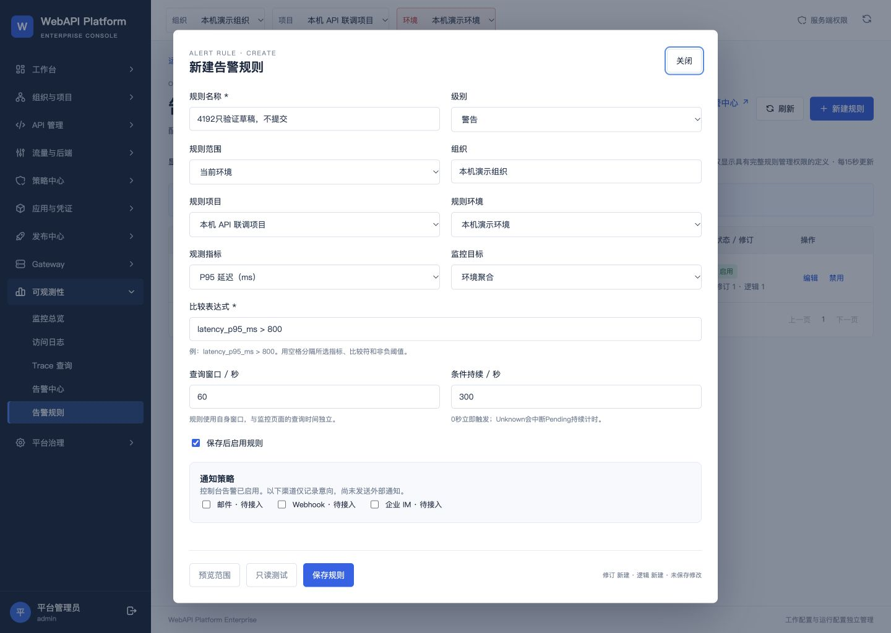
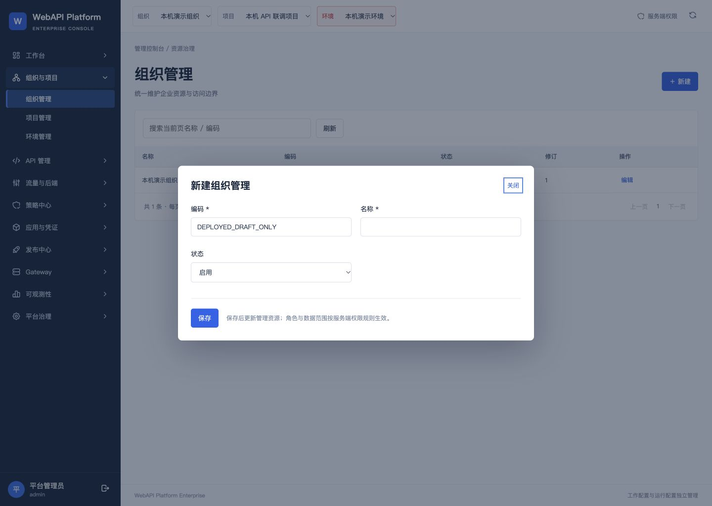
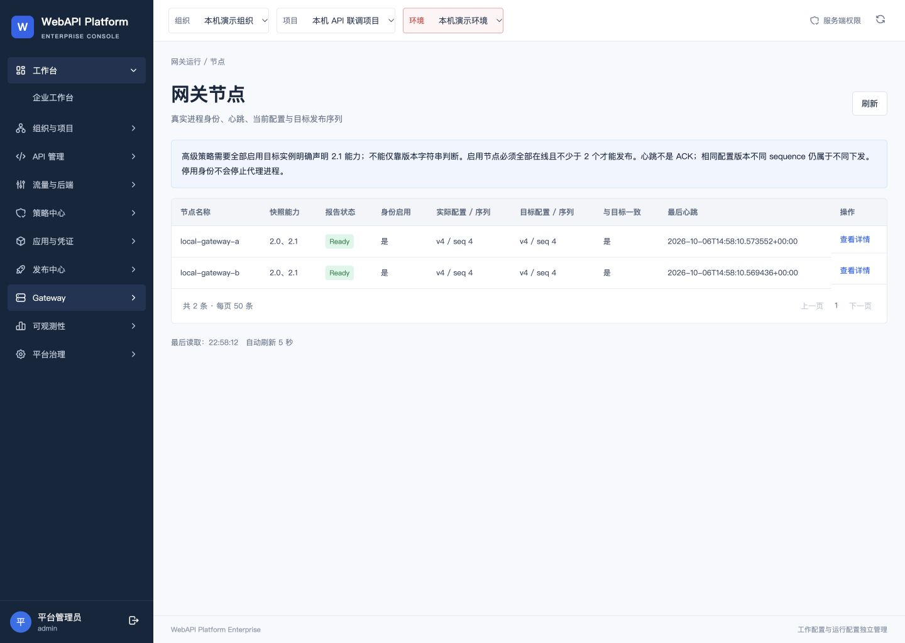
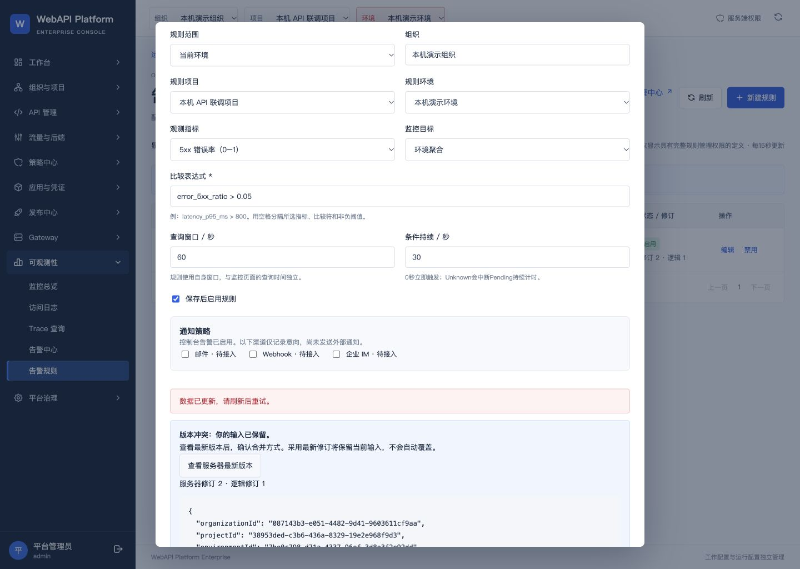
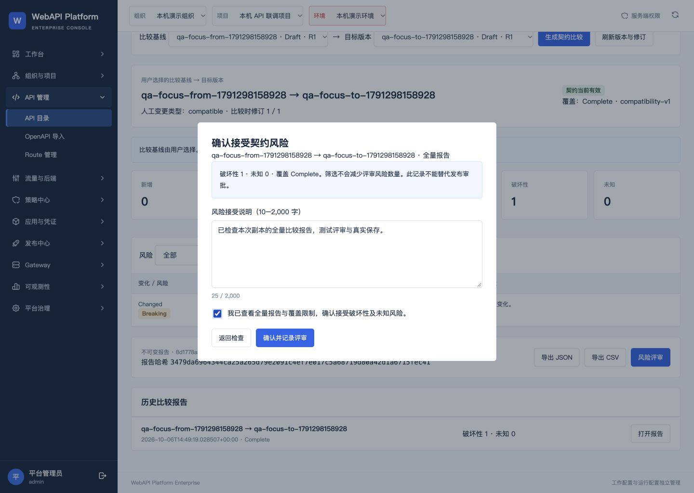

键盘交互修复已安装到4192
2026-10-06 23:02 · 上海时间
打开企业工作台 · 完整中文验收记录 · 验证回执
975c7b5已提交、合并、安装
225 + 706自动回归全部通过
15个服务双网关Ready · v4 / seq4
33个表、539个原本机文件和32个历史交付包保持；真实412和风险评审写入仅在本次演练副本发生。
4192实际告警弹窗焦点与草稿

4192实际通用Editor焦点

4192双网关Ready

演练副本真实412

演练副本真实风险报告与评审

检查边界
本机升级验收；此前40页QA与隔离包保持冻结，未重新手工遍历全部40页。工作台24h采集覆盖不足保持空值，当前四观测源Available。没有新增业务发布或数据库迁移，不代表生产验收。原账号与密码不变。